원자력기사 (2022-09-18 기출문제)
1과목: 원자력기초
1. 원자 핵 내에서 작용하는 힘에 대한 설명으로 옳지 않은 것은?
- 양성자와 상호 간에 작용하는 힘은 전기력보다 작다.
- 핵자 간에 인력이 작용 및 10-15m수준 근거리서 작용한다.
- 중성자와 중성자 간에 작용하는 힘은 양성자 간에 작용하는 힘과 같다.
- 양성자, 중성자 등 핵자들 간에 교환력이 존재한다.
(정답률: 알수없음)

2. 감속능과 감속비에 대하여 올바르게 설명한 것은?
- 중성자가 원자핵에 입사하여 충돌 당 잃는 에너지가 작을수록 감속능은 크다.
- 감속능은 중성자의 산란단면적이 클수록 크다.
- 감속능은 중성자 흡수단면적이 작을수록 크다.
- 감속비가 클수록 감속능도 비례하여 크다.
(정답률: 알수없음)
3. 원자로 주기 (Period)에 대하여 올바르게 설명한 것은?
- 원자로 제어 측면에서 중성자 수명시간이 길수록 원자로를 제어하기 쉽다.
- 지발중성자 선행핵의 붕괴상수는 원자로 주기에 영향을 미치지 않는다.
- 원자로 주기는 출력과도 현상이 생길 때, 원자로 출력이 2배 변화하는데 소요되는 시간이다.
- 원자로 주기가 짧을수록 중성자 밀도 또는 원자로 출력의 변화는 서서히 일어난다.
(정답률: 알수없음)
4. 3,000°K 온도에서 중성자 에너지 및 최빈속력은 대략 얼마인가? (단, 속력분포는 Boltzmann 분포를 가정하고 Boltzmann 상수는 1.38 × 10-23J/°K 이며 중성자의 무게는 1.67 × 10-27kg이다.)
- 0.259eV, 7,040m/sec
- 0.259eV, 70,400m/sec
- 2.59eV, 7,040m/sec
- 2.59eV, 70,400m/sec
(정답률: 알수없음)
5. 다음 중 핵물리 마법 수 (Magic Number) 에 대한 설명으로 올바르지 않은 것은?
- 핵자 간 결합에너지는 He-4보다 Li-6보다 크다.
- 양성자 수가 마법수인 경우 주변 원소보다 더 많은 동위원소가 존재한다.
- 중성자 수가 마법수인 원자는 주변 동위원소보다 중성자 흡수 단면적이 크다.
- 마법수를 갖는 원소의 자연 존재비가 주변 원소에 비해 높다.
(정답률: 알수없음)
6. 중성자 감속재 특성에 대한 설명으로 올바르지 않은 것은?
- 감속능보다 감속비가 높은 물질이 선호된다.
- 흡수단면적이 작은 물질이 선호된다.
- 대수적 에너지 감쇠율은 감속능이 클수록 1에 가까운 값을 갖는다.
- 충돌 당 에너지 감소량은 중수소가 수소보다 크다.
(정답률: 알수없음)
7. 정상상태에 있는 열출력 3,000MW 원자로에 부(-)반응도가 삽입되어 40초 후 열출력이 300MW로 떨어졌다면, 2분 후의 원자로 열출력은 대략 얼마인가?
- 1MW
- 2MW
- 3MW
- 4MW
(정답률: 알수없음)
8. 다음 중 가압경수로 (Pressurized Water Reactor, PWR)에서 반응도가 낮아질 수 있는 경우에 대한 설명으로 옳지 않은 것은?
- 핵연료 온도 감소
- 냉각재 온도 증가
- Xe-135 생성
- 제어봉 삽입
(정답률: 알수없음)
9. 다음 중 Buckling, B2에 대한 설명으로 올바르지 않은 것은? (단, Bg는 기하학적 버클링, Bm는 물질(재료) 버클링을 의미한다.)
- Bg은 중성자 누설과 관련이 있다.
- 높이가 무한인 실린더형 노심에서 Bg는 반지름의 제곱에 비례한다.
- Bm은 무한한 공간 내에서 중성자의 생성/소멸과 관련있다.
- 초임계 상태에서는 Bg가 Bm보다 크다.
(정답률: 알수없음)
10. 다음 중 고속로 또는 고속증식로 (Fast Breeder Reactor, FBR)와 관련된 설명으로 올바르지 않은 것은?
- 핵분열성 물질이 소모되는 것보다 더 많은 핵분열성 물질이 소모된다.
- 전환율이 0보다 큰 원자로를 증식로라고 부른다.
- 냉각재로 Na과 같은 액체금속 및 He과 같은 Gas가 사용될 수 있다.
- Np, Am과 같은 장반감기 TRU 원소를 소각하는 데 사용할 수 있다.
(정답률: 알수없음)
11. U-235 핵분열 과정에서 방출되는 에너지가 가장 높은 것과 가장 낮은 것을 올바르게 나열한 것은?
- 핵분열 파편, 핵분열 중성자
- 핵분열파편, 감마선
- 핵분열 중성자, 중성미자
- 핵분열 중성자, 베타선
(정답률: 알수없음)
12. 다음 중 원자핵에 대한 설명으로 올바르지 않은 것은?
- 동일한 양자수를 가지더라도 중성자 수가 달라 질량수가 서로 다른 핵종을 동위원소라고 한다.
- 동위원소는 전자 수와 양자 수가 동일하므로 화학적 특성과 핵적 특성이 동일하다.
- C-14, N-15, O-16 등과 같이 양자 수는 다르지만, 중성자수가 같은 핵종을 동중성자핵이라고 한다.
- C-14, N-14처럼 양자수와 중성자 수가 서로 다르지만 질량 수가 같은 핵종을 동중원소라고 한다.
(정답률: 알수없음)
13. 다음 중 핵융합로의 연료 물질이 아닌 것은?
- 중수소
- 삼중수소
- 헬륨
- 리튬
(정답률: 알수없음)
14. 어떤 원자로의 정지여유도 운전제한치는 5.5% Δk/k이다. 이것을 $ 단위로 표시하면 대략 얼마인가? (단, 유효 지발중성자 분율은 0.007⑤4이다.)
- 0.87
- 3.25
- 5.63
- 7.80
(정답률: 알수없음)
15. 어떤 원자로의 운전 중 계수율이 10,000cps이고 이 때 유효증배계수 값이 0.95이었다. 이 원자로의 계수율이 20,000cps로 되었을 때, 노심에 첨가된 반응도 pcm는 대략 얼마인가?
- 2,699
- 4,415
- 7,482
- 9,838
(정답률: 알수없음)
16. 유효증배계수가 0.995인 원자로의 평균 온도를 298℃에서 288℃까지 낮추었다. 이 원자로의 현재 상태는? (단, 이 원자로의 등온온도계수는 –18cpm/℃이다.)
- 초임계
- 미임계
- 임계
- 알 수 없음
(정답률: 알수없음)
17. 다음은 체적 dv 내 중성자 확산방정식을 기술한 것이다. 각 항이 갖는 물리적 의미로 올바르지 않은 것은?
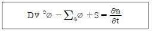
- D▽2ø : 체적 dv 내에서의 중성자 누설률
- ∑aø : 체적 dv 내에서의 중성자 흡수율
- S : 체적 dv 내에서의 중성자 생성율
- ∂n/∂t: 체적 dv 내에서의 핵반응단면적 변화율
(정답률: 알수없음)
18. 농축도 3.5w/o인 UO2 핵연료가 1⑤ TON 장전된 원자로가 있다. 원자로 열출력 3,985MWth, 이용률 80%로 18개월 동안 운전할 경우 주기말 연소도 MWD/MTU는 대략 얼마인가?
- 10,340
- 14,650
- 18,860
- 23,120
(정답률: 알수없음)
19. 다음 핵열방출점 (POAH, Point of Adding Heat)과 관련된 설명으로 올바르지 않은 것은?
- 핵분열에 의한 열이 냉각재 온도에 영향을 미칠만큼 충분히 발생되기 시작하는 위치를 의미한다.
- POAH 이하에서는 온도궤환효과가 충분하지 않으므로 출력을 제어하려면 제어봉을 사용해야 한다.
- POAH 이상에서는 핵연료 온도증가에 의한 도플러 효과로 부(-)반응도가 삽입된다.
- 핵설계변수 검증을 위해 영출력 노물리 시험은 POAH 이상에서 수행한다.
(정답률: 알수없음)
20. 다음 핵비등이탈률 Departure of Nucleate Boiling, DNBR과 관련된 설명으로 옳지 않은 것은?
- 원자로 출력이 증가할수록 DNBR이 감소한다.
- 냉각재 온도가 증가할수록 DNBR이 증가한다.
- 냉각재 유량과 압력이 증가할수록 DNBR이 증가한다.
- 원자로 냉각재 기포량이 증가할수록 DNBR이 감소한다.
(정답률: 알수없음)
2과목: 핵재료공학 및 핵연료관리
21. U-235의 농축도가 가장 낮은 물질은?
- 감손 우라늄
- 극저농축 우라늄
- 천연 우라늄
- PWR 사용 후 핵연료
(정답률: 알수없음)
22. 원자로 출력에 영향을 주는 독물질 중 가장 많은 양성자를 가진 핵종은?
- Xe-135
- I-135
- Sm-149
- U-238
(정답률: 알수없음)
23. 중수로에 사용되는 핵연료 소결체의 특성으로 적절하지 않은 것은?
- 경수로에 사용되는 소결체에 비해 직경이 크다.
- 경수로에 사용되는 소결체에 비해 길이가 짧다.
- 경수로에 사용되는 소결체와 같이 상하면은 접시모양으로 파여있다.
- 천연 이산화우라늄 분말을 사용한다.
(정답률: 알수없음)
24. 콘크리트 제염에 가장 적합한 제염 방식은?
- 물분사
- 초음파
- Scabbling
- 고체 탄산가스/얼음 분사
(정답률: 알수없음)
25. 건식으로 UF6으로부터 UO2 분말을 제조하는 방법이 아닌 것은?
- IDR
- GECO
- SILEX
- NUKEM
(정답률: 알수없음)
26. 경수로 핵연료 피복관의 기계적 강도가 약해지게 되는 주된 원인이 되는 반응식은?
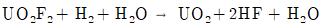
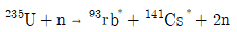
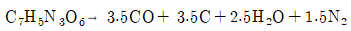
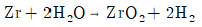
(정답률: 알수없음)
27. U-235의 농축도가 0.72%인 천연 우라늄 1kg의 45억년 전 농축도는? (단, U-238의 반감기는 4.5 × 109년이고 U-235의 반감기는 7 × 108년이다.)
- 약 4%
- 약 12%
- 약 31%
- 약 54%
(정답률: 알수없음)
28. 우라늄 채광 과정에서 우라늄의 화학적 조성으로 올바른 것은?
- UO2
- UF6
- U3O8
- UC2
(정답률: 알수없음)
29. 경수로의 핵연료봉 내부에 약 3MPa의 He 기체를 충진하는 이유로 올바른 것은?
- 연료 연소에 따른 고밀화를 보상하기 위해
- 연료 연소에 따른 팽윤을 보상하기 위해
- 핵연료 피복재의 부식에 따른 영향을 최소화하기 위해
- 핵분열생성물의 생성을 줄이기 위해
(정답률: 알수없음)
30. 핵연료 연소에 따라 피복재의 손상 가능성이 증가한다. 이러한 피복재의 손상과 관련이 적은 것은?
- 피복재 소성변형
- 소결체 Creep
- 핵분열 생성기체
- 소결체 피복재 상호작용
(정답률: 알수없음)
31. 중수로 핵연료에 대한 설명으로 올바르지 않은 것은?
- 천연우라늄 UO2 형태의 세라믹 연료를 사용한다.
- 연소도는 7.5 MWD/kg-U 이다.
- Zr Tube 내 소결체를 담은 Bundle로 구성된다.
- 핵연료는 약 1/3 Batch 별로 재장전된다.
(정답률: 알수없음)
32. 핵연료 피복재 외부 표면의 CRUD 생성에 미치는 주요 인자와 거리가 먼 것은?
- pH
- Li 농도
- 온도
- 압력
(정답률: 알수없음)
33. 자체처분 대상 폐기물에서 Sr-90과 Cs-137이 검출되었는데, Sr-90의 방사능 농도가 0.6Bq/g이었다. 이 폐기물을 원자력안전위원회 고시에 따라 자체처분할 수 있는 Cs-137의 방사능 농도 Bq/g은? (단, Sr-90의 자체처분 허용농도는 1Bq/g이고 Cs-137의 자체처분 허용농도는 0.1Bq/g이다.)
- 0.03
- 0.06
- 0.08
- 0.1
(정답률: 알수없음)
34. 사용 후 핵연료 중간저장시설에 대한 설계기본요건, 미임계 및 사용 재료 관련 기준으로 올바르지 않은 것은?
- 미임계 유지 위해 고정식 중성자 흡수체를 사용할 수 있다.
- 필요 시 저장된 사용 후 연료를 안전하게 회수할 수 있어야 한다.
- 가능한 한 능동형 설비를 이용하여 사용 후 연료를 안전하게 저장할 수 있도록 설계해야 한다.
- 가능한 한 불연성 재료를 사용하여야 한다.
(정답률: 알수없음)
35. 정격출력 1,000MWe, 열효율 40%, 가동율 98%, 운전시간 365인 어떤 경수로의 핵연료 연소도가 11,178 MWD/MTU 이었다. 이 원자로에 장전된 우라늄 MTU은?
- 약 80
- 약 90
- 약 100
- 약 110
(정답률: 알수없음)
36. 우라늄 농축방법인 특징으로 옳은 것은?
- 원심분리법은 분리계수가 높아 Cascade의 소요단수가 적어도 된다.
- 기체확산법은 전력소모량이 적고 소량의 냉각수만 필요하다는 장점이 있다.
- 화학교환법은 UF6를 쓰지 않고 우라늄 용액을 사용하므로 장치가 복잡하다.
- 노즐법은 분리계수가 작고 복잡한 장치가 있어야 하는 단점이 있다.
(정답률: 알수없음)
37. 핵연료 피복관에 대해 올바르게 설명한 것은?
- Al 합금 피복관은 상온에서의 높은 연성으로 상업용 원자로에 쓰인다.
- Zr 피복관 제조공정에 사용되는 Zr 광석을 Zircon Ingot이라고 한다.
- Zrcaloy-4는 Zircaloy-2에서 Ni을 제거하고 Fe를 증가시킨 것이다.
- Stainless Steel은 Zr에 비해 열전도도가 높고 열중성자 흡수단면적이 작아야 한다.
(정답률: 알수없음)
38. 원자로 냉각수의 pH 제어를 위해 사용되는 수산화리튬 (LiOH)에 대한 설명으로 올바르지 않은 것은?
- Li의 중성자 포획반응으로 인한 HTO의 생성을 억제하기 위해 Li-6를 농축하여 사용한다.
- 열중성자에 대한 흡수단면적이 작아서 중성자 경제성이 우수하다.
- 높은 농도의 Li은 핵연료 피복재의 부식을 초래한다.
- 부식생성물 용해도를 감소시켜 냉각재의 용해 침적물 양을 감소시킨다.
(정답률: 알수없음)
39. 원자력발전소의 수화학 관리 목적으로 올바르지 않은 것은?
- 주요 기기 부식방지
- 핵연료 건전성 향상
- 출력 증강
- 원전 비상정지
(정답률: 알수없음)
40. 현행 원자력안전법에 따른 방사성폐기물 처분방식에 대한 설명 중 올바르지 않은 것은?
- 표층처분은 천층처분 방식 중 하나이다.
- 매립형 처분은 공학적 방벽이 없다.
- 심층처분은 지하 깊은 곴의 안정한 지층 구조에 천연방벽 또는 공학적 방벽으로 처분하는 것이다.
- 동굴처분은 고준위방사성폐기물을 처분할 수 있는 방식이다.
(정답률: 알수없음)
3과목: 발전로계통공학
41. 증기발생기 2대가 설치된 원자력발전소에서 각각의 증기발생기는 190.6℃의 급수가 유입됭 284.9℃의 포화증기 2.93 × 106kg/h를 생산한다. 모든 증기발생기 출력을 통해 계산된 열출력 MWth은? (단, 190.6℃ 급수의 엔탈피는 807.8 kJ/kg이고, 284.9℃ 포화증기의 엔탈피는 2773.2kJ/kg이다.)
- 약 1,000 MWth
- 약 1,600 MWth
- 약 3,200 MWth
- 약 4,200 MWth
(정답률: 알수없음)
42. 체적이 3m3인 탱크 안에 압력이 1MPa이고 온도가 50℃인 공기가 들어있다. 공기를 가열하여 압력이 1.2MPa가 되었을 때, 공기로 전달된 에너지 kJ은 얼마인가? (단, 탱크는 완전히 단열되어 있으며 공기의 특정기체상수와 정적비열은 각각 0.287 kJ/kg-K , 0.717 kJ/kg-K이다.)
- 약 1,300
- 약 1,500
- 약 1,700
- 약 1,900
(정답률: 알수없음)
43. 다음 그림은 가압경수형 원자력발전소 2차측의 이론적인 T-S 선도이다. 2차측 열효율을 높이기 위한 방법으로 적절하지 않은 것은?
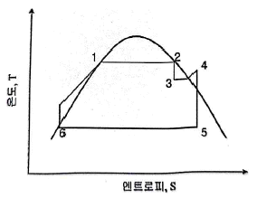
- SG의 압력을 높인다.
- 복수기의 압력을 높인다.
- 습분분리기 및 재열기의 온도를 높인다.
- 급수예열기의 온도를 높인다.
(정답률: 알수없음)
44. 유랑률이 인 상온의 물이 직경 D인 원형 배관을 통과할 때, Re수가 N이라면, 동일 유량률 의 상온의 물이 직경이 D/2인 원형배관을 통과할 때 Re수로 올바른 것은?
- 0.25N
- 0.5N
- 2N
- 4N
(정답률: 알수없음)
45. 대류 열전달에 대한 설명으로 올바르지 않은 것은?
- 대류 열전달률은 열전달 면적에 비례한다.
- 대류 열전달률은 대류 열전달계수에 비례한다.
- 대류 열전달계수는 물질의 고유특성이다.
- 대류 열전달계수의 단위는 W/m2-K이다.
(정답률: 알수없음)
46. 다음 중 펌프에서 발생되는 Cavitation 공동 현상에 대한 설명 중 올바르지 않은 것은?
- 펌프 진동의 원인이 된다.
- 펌프 회전체의 침식을 유발한다.
- 펌프 흡입구 온도가 높을수록 발생가능성이 크다.
- 펌프 흡입구 압력이 높을수록 발생가능성이 크다.
(정답률: 알수없음)
47. 일정한 열유속으로 가열되고 있는 수직 원통관 하부로부터 물을 주입 시, 관찰되는 이상 유동의 형태를 관 하부로부터 순서대로 바르게 나열한 것은?
- 다기포 유동 → 슬러그 유동 → 환상 유동 → 액적 유동
- 다기포 유동 → 환상 유동 → 슬러그 유동 → 액적 유동
- 슬러그 유동 → 다기포 유동 → 환상 유동 → 액적 유동
- 슬러그 유동 → 다기포 유동 → 액적 유동 → 환상 유동
(정답률: 알수없음)
48. 가압경수형 원자력발전소에서 핵연료 피복관 표면에 생성되는 산화막의 축방향 두께분포는 핵연료 피복관 표면의 온도분포와 일치한다. 핵연료 피복관 표면에 생성된 산화막의 두께가 최대인 축방향 위치는?
- 핵연료 피복관의 최상단부
- 핵연료 피복관의 하부로부터 약 3/4지점
- 핵연료 피복관의 하부로부터 약 1/2지점
- 핵연료 피복관의 하부로부터 약 1/4지점
(정답률: 알수없음)
49. 핵연료봉 표면의 임계열유속 CHF이 30W/m2이고 핵연료봉 실제표면의 국부 열유속이 24W/m2일 때, DNBR은?
- 0.2
- 0.25
- 0.8
- 1.25
(정답률: 알수없음)
50. 원자력발전소 핵연료봉의 열전달 특성에 대한 설명으로 올바르지 않은 것은?
- 핵연료에서만 열이 발생한다.
- 핵연료와 봉입기체 접촉면의 온도가 가장 높다.
- 피복재 내부의 열전달은 전도 열전달이다.
- 연료봉 표면에서 비등 열전달이 발생한다.
(정답률: 알수없음)
51. APR-1400 노형 원전에서 안전주입계통의 안전주입펌프를 이용하여 노심 냉각 시 사용되는 안전등급 붕산수원 탱크는?
- 붕산 저장탱크
- 안전주입탱크
- 원자로 보충수 탱크
- 원자로 건물 내 재장전수 탱크
(정답률: 알수없음)
52. 한국 표준형 원전의 증기발생기에 대한 설명으로 올바르지 않은 것은?
- U자형 전열관은 스테인리스강으로 제작된다.
- 습분분리장치가 설치되어 있으며, 건도 99.75% 이상의 증기를 터빈에 공급한다.
- 2차측 바닥에 Sluge 축적을 방지하기 위해 취출수 노즐이 설치되어 있다.
- 출구에 Ventrui Nozzle 형태의 유량제어기가 설치되어 주증기관 파단사고 시 방출유량을 제한한다.
(정답률: 알수없음)
53. 원자로 정지불능 예상과도 상태 및 공통원인고장에 의한 위험을 감소시키기 위한 계통은?
- 다양성 보호계통
- 원자로 보호계통
- 공학적 안전설비 작동계통
- 제어봉 제어계통
(정답률: 알수없음)
54. 가압경수형 원자력발전소의 공학적 안전설비가 아닌 것은?
- 안전주입계통
- 보조급수계통
- 화학 및 체적제어계통
- 원자로 건물 살수계통
(정답률: 알수없음)
55. APR-1400 노형 원자로 건물 내 수소와 같은 가연성 기체를 제어하기 위해 설치된 설비가 아닌 것은?
- 피동수소재결합기
- 수소점화기
- 원자로건물 수소퍼지계통
- 소염망
(정답률: 알수없음)
56. 가압경수로의 원자로 냉각재 계통에 대한 설명으로 올바르지 않은 것은?
- 원자로에서 생성된 에너지를 SG로 이송역할을 한다.
- 핵분열생성물의 주변확산을 방지하는 물리적 방벽이다.
- 중성자를 감속시켜 핵분열 가능성을 감소시킨다.
- 화학 및 붕소농도 제어를 위해 냉각재를 순환시킨다.
(정답률: 알수없음)
57. 한국 표준형 원자력발전소의 보조급수계통에 대한 설명으로 올바르지 않은 것은?
- 보조급수펌프는 모터구동 1대, 터빈구동 1대로 총 2대가 설치되어 있다.
- 증기발생기에 주급수 공급이 불가능할 경우 비상급수를 공급하기 위한 설비이다.
- 보조급수계통의 흡입원은 복수 저장탱크(또는 보조급수 저장탱크)이다.
- 보조급수계통은 보조급수 작동신호에 의해 자동 기동한다.
(정답률: 알수없음)
58. 한국 표준형 원자력발전소의 원자로 보호계통에 대한 설명으로 올바르지 않은 것은?
- 발전소 보호계통의 일부헤 속한다.
- 예상운전과도 발생 시, 원자로 안전제한치 초과 방지를 위해 원자로 정지신호를 제공한다.
- 안전제한치에는 압력경계 건전성 확보를 위한 냉각재 압력이 포함된다.
- 안전제한치에는 핵연료 건전성 확보를 위한 사분출력경사비(QPTR)가 포함된다.
(정답률: 알수없음)
59. 한국 표준형 원자력발전소의 노내 핵계측계통 및 노외 중성자속 감시계통에 대한 설명으로 올바르지 않은 것은?
- 노외 중성자속 감시계통의 기동채널은 0% ~ 15% 출력준위까지의 노외 중성자속을 연속 감시한다.
- 노내계측기 측정 결과를 이용하여 노심의 중성자속 분포도를 만들 수 있다.
- 노외 중성자속 감시계통은 원자로용기로부터 누설되는 중성자속을 감시하여 원자로 출력을 측정하는 수단을 제공한다.
- 노내 핵계측기 검출기 집합체는 제어봉이 삽입되지 않은 핵연료집합체의 중앙 안내관에 위치한다.
(정답률: 알수없음)
60. 한국 표준형 원자력발전소의 가압기 수위제어계통 및 압력제어계통에 대한 설명으로 올바르지 않은 것은?
- 가압기 수위는 유출유량과 충전유량을 이용하여 제어된다.
- 저수위 신호 발생 시 모든 전열기를 기동하여 수위를 증가 시킨다.
- 가압기 압력은 가압기 전열기와 살수를 이용하여 제어된다.
- 가압기 압력제어계통은 RCS를 과냉각 상태로 유지시킨다.
(정답률: 알수없음)
4과목: 원자로 안전과 운전
61. 원자력안전법에 따라 제출된 사고관리계획서에는 기존의 설계기준 사고 외에 9개의 다중고장에 의한 사고를 고려하여야 한다. 다음 중 사고관리계획서에 고려된 다중고장에 의한 사고의 종류가 아닌 것은?
- RCP 회전차 고착
- 최종 열제거원 상실사고
- 사용 후 핵연료저장조 냉각기능 상실사고
- 증기발생기 전열관 파단사고
(정답률: 알수없음)
62. 중대사고관리에서 원자로격납건물의 건전성을 위협하는 요인이 아닌 것은?
- 가연성 기체 연소 또는 폭발
- 노심 용융물과 콘크리트의 반응 (MCCI)
- 고방사성 물질 분출 (HRE)
- 원자로 격납건물 직접가열 (DCH)
(정답률: 알수없음)
63. 가압경수형 원자력발전소의 공학적 안전설비 ESF 신뢰성 확보위한 설계특성 중 다음 설명에 해당하는 것은?
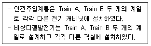
- 고장안전과 다중성
- 다양성과 독립성
- 동시성과 다중성
- 다중성과 독립성
(정답률: 알수없음)
64. 가압경수형 노심이 주기초 BOC에서 주기 말 EOC로 진행될수록 노심의 반경방향 출력분포가 말안장 모양 (Saddle Type : 주기말로 갈수록 중앙의 출력이 감소하고 노심 가장자리의 출력이 증가함) 으로 변화하는 원인은?
- 가연성 독물질 농도 변화
- 붕소농도 변화
- 핵연료 연소
- 냉각재 온도
(정답률: 알수없음)
65. 원자력발전소에서 전원상실사고 (Staint Black Out, SBO) 로 인한 RCP 정지 시 노심 잔열을 냉각하는 원리는?
- 핵연료의 고온으로부터 발생되는 복사열 전달
- 증기발생기와 냉각재의 온도차에 의한 자연대류
- 제어봉 삽입에 따른 잔열발생 억제로 열발생량 감소
- 부(-)반응도 주입에 따른 분열감소로 열발생량 감소
(정답률: 알수없음)
66. 가압경수형 노심의 전 수명기간 동안 원자로 반응도 제어에 영향을 주는 장기인자가 아닌 것은?
- 연료 연소
- Pu 축적
- 가연성 독물질 생성
- 분열생성물 독물질 축적
(정답률: 알수없음)
67. 가압경수형 원자로에 제어봉 삽입 수 유효증배계수에 가장 크게 영향을 주는 인자는?
- 중성자 생성율
- 공명이탈확률
- 속분열계수
- 열중성자 이용률
(정답률: 알수없음)
68. 중대사고 현상은 일반적으로 노 내 (In Vessel)와 노 외 (Ex-Vessel) 현상으로 분류한다. 다음 중 노내 In Vessel 현상이 아닌 것은?
- Zr 산화
- 노심 용융물과 콘크리트 반응
- 노심 재배치
- 원자로 하부헤드 가열
(정답률: 알수없음)
69. 가압경수형 원자로의 가연성 독물질봉 사용 목적에 대한 설명 중 틀린 것은?
- 가연성 독물질량 변화를 이용한 신속한 반응도 제어
- 임계질량 이상의 연료로 인한 반응도 억제
- 수용성 붕소농도 감소로 인한 감속재온도계수의 부(-)값 유지
- 중성자속 반경방향 출력분포 평형 유지
(정답률: 알수없음)
70. 중수형 원자로가 출력운전 중 정지 시 원자로 재기동 불능시간과 가장 관련이 있는 독물질은?
- Sm
- Xe
- Iodine
- Boron
(정답률: 알수없음)
71. 가압경수형 원자력발전소 출력운전 중 감속재온도계수에 대한 설명 중 올바르지 않은 것은?
- 출력상승 시 양(+)의 감속재 온도계수를 가진다.
- 2차측 배관파단사고 시 양(+)의 감속재온도계수로 출력이 상승한다.
- 과소감속영역에서 감속재온도계수가 음(-)의 값을 갖도록 한다.
- 냉각재 온도 상승 시, 자체적으로 부(-) 반응도 삽입효과를 갖게 한다.
(정답률: 알수없음)
72. 가압경수형 원자로의 출력결손을 구성하고 있는 인자 중 틀린 것은?
- 감속재 온도변화에 따른 결손
- 핵연료 온도변화에 따른 결손
- 기포생성에 따른 결손
- 중성자 누설에 따른 결손
(정답률: 알수없음)
73. 가압경수형 원자력발전소의 상태 구분에 따른 ANSI N 18.2의 사고분류에 대한 설명 중 올바르지 않은 것은?
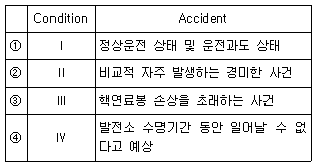
- ①
- ②
- ③
- ④
(정답률: 알수없음)
74. 가압경수형 원자력발전소의 화학제어제가 주로 영향을 미치는 반응도 인자는?
- 속분열 계수
- 열중성자 이용률
- 재생계수
- 공명이탈확률
(정답률: 알수없음)
75. 아래와 같이 운전하는 원자로가 있다. 이 원자로의 Hot Channel Factor, HCF는? (단, LPD는 선형출력밀도 (Linear Power Density, LPD)를 의미한다.
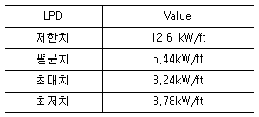
- 약 1.51
- 약 1.53
- 약 2.18
- 약 2.32
(정답률: 알수없음)
76. 가압경수형 원자력발전소에서 가압열충격 PTS를 일으킬 수 있는 경우가 아닌 것은?
- 보조급수계통 동작
- 안전주입계통 동작
- 원자로 격납건물 살수계통 동작
- 주증기계통 안전밸브 개방 고착
(정답률: 알수없음)
77. 국제원자력기구 IAEA에서 제시한 안전성 확보를 위한 근본적인 안전원칙이 아닌 것은?
- 안전에 대한 책임
- 조직의 최적화
- 정부의 역할
- 사고방지
(정답률: 알수없음)
78. 원자력안전성 확보를 위한 심층방어의 단계별 목표가 잘못 기술된 것은?
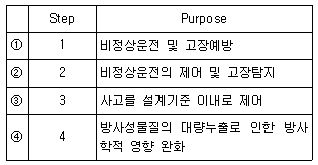
- ①
- ②
- ③
- ④
(정답률: 알수없음)
79. 다음 중 다수호기 확률론적 안전성 평가 PSA의 초기사건이 아닌 것은?
- 분석대상 호기에 노심손상을 야기할 수 있는 사건
- 태풍, 지진 등 2개 이상 호기에 동시영향을 주는 사건
- 특정 1개 호기서 발생초기사건이 인접한 타호기에 영향을 미치는 경우
- 독립적인 초기사건의 연속발생
(정답률: 알수없음)
80. 다음 중 미국 TMI 사고 이후 안전성 향상을 위한 설계개선사항이 아닌 것은?
- 가압기 압력방출 · 차단밸브, 수위지시계에 비상전원 공급
- 안전수치 표시반 설치 (SPDS)
- 노심상태 감시기 설치
- 대체교류전원 디젤발전기 (AAC DG) 설치
(정답률: 알수없음)
5과목: 방사선이용 및 보건물리
81. 감마선 차폐에서 축적인자에 관한 설명으로 올바르지 않은 것은?
- 산란 방사선에 의하여 유발된다.
- 입사되는 감마선 에너지에 따라 달라진다.
- 차폐체 구성물질에 따라 달라진다.
- 축적인자를 고려하지 않으면 차폐 후 선량률이 실제보다 과대평가 된다.
(정답률: 알수없음)
82. 다음 괄호 안에 순서대로 들어갈 알맞은 말은?
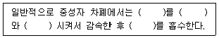
- 열중성자, 가벼운 원소, 탄성충돌, 제동방사선
- 고속중성자, 가벼운 원소, 탄성충돌, 열중성자
- 고속중성자, 무거운 원소, 비탄성 충돌, 제동방사선
- 열중성자, 무거운 원소, 비탄성 충돌, 열중성자
(정답률: 알수없음)
83. 다음은 어떤 방사성 핵종의 특성을 설명한 것으로 올바르지 않은 것은? (단, ln2는 0.693이다.
- 물리적 반감기가 5년이다.
- 생물학적 반감기가 5년 유효반감기각 2.5년이다.
- 평균수명이 3.47년이다.
- 붕괴상수가 0.139year-1이다.
(정답률: 알수없음)
84. 방사선관리구역으로부터 퇴거하는 사람 또는 반출하는 물품의 방사성물질 오염도 제한에 관한 설명으로 올바르지 않은 것은?
- 물품 표면을 제거할 수 없는 Co-60 오염도는 4kBq/m 이하로 제한한다.
- 물품 표면의 제거할 수 있는 U-238 의 오염도는 0.04kBq/m2 이하로 제한한다.
- 인체 표면의 제거할 수 없는 방사성물질 오염도는 허용표면 오염도 이하로 제한한다.
- 인체에 착용한 신발 표면의 제거할 수 있는 방사성물질 오염도는 허용표면오염도의 1/10 이하로 제한한다.
(정답률: 알수없음)
85. 공기와 피부의 전자밀도가 각각 3.0 × 1023개/g, 3.3 × 1023개/g일 때 1kg의 공기에 0.5C 의 전하량을 생성하는 조사선량에 의해 피부가 받게 되는 흡수선량 Gy은? (단, 단일 이온 개의 전하량은 1.6 × 10-19C이고 공기 중에서 하나의 이온쌍을 생성하는데 필요한 에너지는 34eV이다.)
- 9 Gy
- 16 Gy
- 17 Gy
- 18 Gy
(정답률: 알수없음)
86. 3L/min의 속도로 1시간 동안 Ar-47 (반감기 : 1.83 시간) 공기 시료를 연속 채취하고 30분 후에 실험실에서 시료의 방사능을 계측하기 시작하여 1시간 동안 총 3,600 Count를 얻었다. 공기 중 Ar-41의 방사능 농도 Bq/m3는 얼마인가? (단, 계측기의 효율은 20%이며 BKG 계수율은 고려하지 않는다.)
- 24.0
- 27.8
- 40.3
- 48.4
(정답률: 알수없음)
87. 다음 중 양전자 방출 단층촬영 PET에 주로 사용되는 방사성 동위 원소만 나열한 것으로 올바르지 않은 것은?
- C-11, F-18
- N-13, O-15
- N-16, F-18
- O-15, F-18
(정답률: 알수없음)
88. 다음 중 Kr-85의 유도한도에 관한 설명으로 올바른 것은?
- 섭취 ALI가 없다.
- 흡입 ALI가 없다.
- DAC가 없다.
- 배기 중 배출관리기준이 없다.
(정답률: 알수없음)
89. Cs-137은 붕괴 시 0.9개의 662keV의 감마선을 방출한다. 이 감마선이 입사방향으로부터 60° 산란 시 광자의 에너지는 얼마인가?
- 0.4MeV
- 0.43MeV
- 0.48MeV
- 0.54MeV
(정답률: 알수없음)
90. 2선원법을 이용하여 GM 계수기의 불감시간을 구하고자 한다. 두개의 선원 각각의 계수율이 5,000cpm과 5,200cpm이고 두 개의 선원 모두 계수 시 10,100cpm이며 배경준위는 50cpm이다. 이 GM계수기의 불감시간은?
- 60usec
- 110usec
- 160usec
- 210usec
(정답률: 알수없음)
91. 다음 설명 중 올바른 것은?
- 오제전자의 에너지는 연속 스펙트럼을 나타낸다.
- 내부전환전자의 에너지는 연속 스펙트럼을 나타낸다.
- 원자번호가 높은 물질일수록 내부전환이 잘 일어난다.
- 내부전환 시 오제전자는 방출되지 않는다.
(정답률: 알수없음)
92. 생애 처음으로 방사선 작업을 시작한 어떤 종사자가 1년 동안 C-14 선원을 취급하는 과정에서 피부에만 집중적으로 2.5Gy의 흡수선량을 받았다. 이 방사선작업종사자의 피폭선량에 관한 설명으로 올바른 것은? (단, 베타선의 방사선 가중치는 1이고 피부의 조직가중치는 0.01이며 다른 방사선 피폭은 없다고 가정한다.)
- 등가선량한도, 유효선량한도를 모두 초과하지 않았다.
- 등가선량한도 초과하지 않았으나 유효선량한도를 초과하였다.
- 등가선량한도를 초과하였으나 유효선량한도는 초과하지 않았다.
- 등가선량한도, 유효선량한도를 모두 초과하였다.
(정답률: 알수없음)
93. ICRP-103 권고에 따라 피폭상황 및 피폭자별로 적용되는 선량제약치 또는 참조준위를 올바르게 짝지은 것은?
- 계획피폭상황 – 일반인 – 참조준위
- 계획피폭상황 – 환자의 간병인 – 선량제약치
- 비상피폭상황 – 방사선작업종사자 – 선량제약치
- 비상피폭상황 – 환자 – 참조준위
(정답률: 알수없음)
94. H-3 10MBq에 오염된 갑상선의 흡수선량률은 몇 mGy/hr인가? (단, 갑상선 질량은 20g, H-3의 최대 에너지는 18keV이다.)
- 1.12
- 1.73
- 3.26
- 5.18
(정답률: 알수없음)
95. 다음 설명 중 올바르지 않은 것은?
- 보상형 GM 계수관은 고에너지 감마선의 에너지 의존성을 보정해 준 검출기이다.
- 동일한 에너지의 감마선을 측정하더라도 측정기의 크기에 따라 나타나는 스펙트럼에 차이가 발생할 수 있다.
- LSC는 감마핵종분석에 적합하지 않다.
- 다중파고분석기는 미분형 검출기이다.
(정답률: 알수없음)
96. 다음 중 ALI, DAC, 배출관리기준의 계산에 고려된 사항 중 올바르지 않은 것은?
- 유도한도는 방사선학적 관점 및 화학적 독성을 반영하였다.
- 배출관리기준은 일반인이 대기 중으로 방출되는 방사성물질을 흡입할 경우 받는 피폭선량으로 일반인의 선량한도에 해당하도록 유도된 수치이다.
- 단일 RI지만 여러 가지 화학형태가 동시에 작업공간에 존재시, 혼합 RI에 의한 피폭으로 취급한다.
- RI의 물리적 및 화학적 특성 (Ex. 입자크기 분포, 화학적형태 등)을 고려하여 특정 시설에서만 적용될 수 있는 유도한도를 설정하여 운영할 수 있다.
(정답률: 알수없음)
97. 다음 중 Rn-220에 관한 설명으로 올바르지 않은 것은?
- Th-234의 자핵종 중 하나이다.
- Thoron 이라고도 부른다.
- 천연 방사성핵종이다.
- 기체상태로 존재한다.
(정답률: 알수없음)
98. 다음 중 RI 생산을 위한 Szilard-Chalmers 법에 관한 사항으로 올바르지 않은 것은? (단, SA는 비방사능이다.)
- 반도효과
- (n,p) 반응
- Hot Atom
- 높은 SA
(정답률: 알수없음)
99. 재활용 고철 등에 포함될 수 있는 방사성물질 또는 천연방사성물질(NORM)을 감시하기 위해 제철소 등에서 사용하는 측정기에 주로 이용되는 검출기는?
- BGO 섬광 검출기
- 플라스틱 섬광 검출기
- Zns(Ag) 섬광 검출기
- Lil(Eu) 섬광 검출기
(정답률: 알수없음)
100. 삼중수소 (H-3, HTO) 시료 분석에서 LSC의 VIAL 재질을 유리로 사용하는 주요 이유는?
- 광학적 발광 소멸을 낮출 수 있다.
- 광출력을 최대로 높일 수 있다.
- 시료 중 HTO 소실을 방지할 수 있다.
- 화학적 발광 소멸을 최소화할 수 있다.
(정답률: 알수없음)